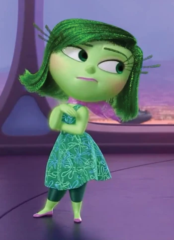

 Брезгливость - одна из пяти эмоций, управляющих и следящих за своей хозяйкой — Райли. Брезгливость отталкивает Райли от отравления (физического и социального.) Она появилась, когда Билл Андерсон кормил Райли брокколи. Брезгливость нажала на пульт и Райли отвергла тарелку с брокколи.
Внешность: У брезгливости светло-зеленая кожа, длинные зеленые волосы и ресницы, зеленые брови и зеленые глаза. Она носит зеленое платье с белыми и голубыми цветами, подпоясанное светло-зелёным ремнём с пряжкой в виде буквы "D", темно-зеленые шорты, розовые балетные туфли и фиолетовый шарф.
Интересные факты:
1. Согласно Питу, моделькой для этого персонажа послужила брокколи.
2. В первом тизере, показанном в 2013 году на D23 Expo, Брезгливость носила фиолетовое платье, имела длинные волосы и короткие ресницы.
3. В первоначальных набросках, Брезгливость была мужского пола. Однако, по странному стечению обстоятельств, её пол стал женским.